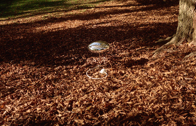
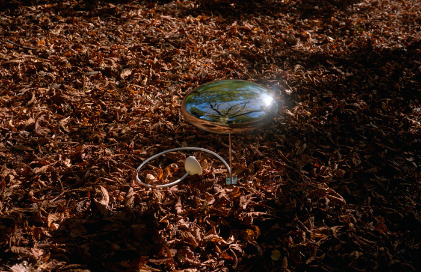
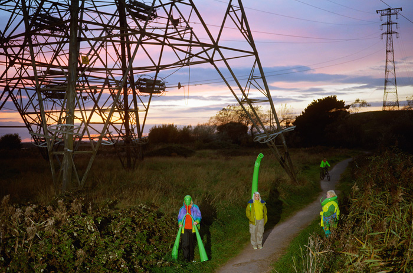
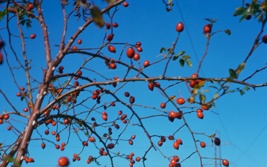
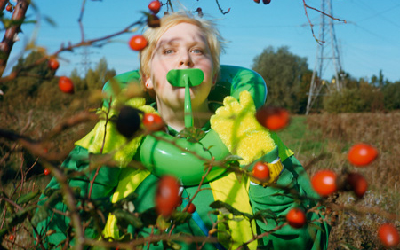
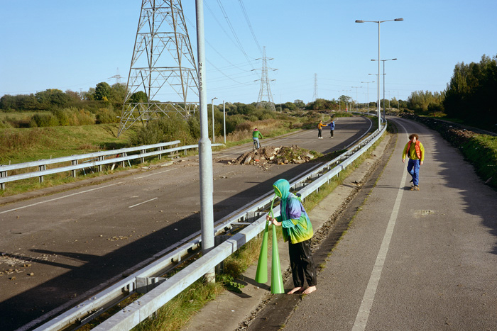
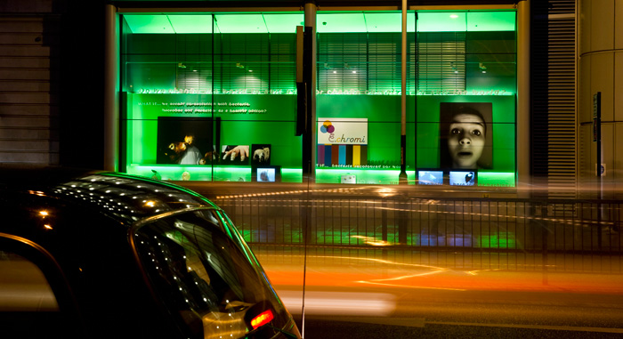
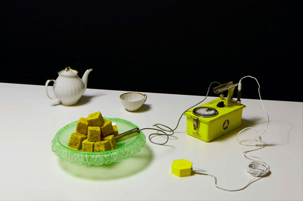
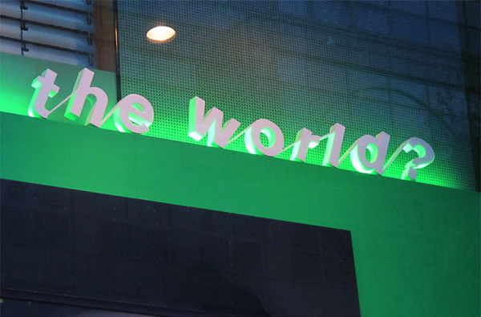

The Breached Reality of the Unreal World
Design for the Unreal World (2018) by Anthony Dunne and Fiona Raby
It’s clear that reality only works for a privileged minority, but designers advocate a realist approach, which means they work within the constraints of reality as it is, for the minority. The school aims to challenge this by making reality a little bit bigger to provide more room for different kinds of dreams and hopes. An important part of this process is generating multiple versions of reality, and this is where design comes in.
We concluded,” he said, “that the only way to challenge this unsatisfactory situation was to be unrealistic—to breach realism’s heavily policed borders and to fully embrace unreality.


Between Reality and the Impossible (2010), by Anthony Dune and Fiona Raby, a number of design proposals presented through models, photographic scenarios, videos and 3D texts.
The phrase ‘real world’ is something most designers (and academics) will be familiar with—as a rallying cry, as a critique, as a justification. But what is this real world, and where is it? More importantly, this suggests there is also a ‘not real world’: where does this not exist? And who decides what is real and what is not (what can and what cannot not exist)?
This binary view, which divides the world of ideas, things, and thoughts into ‘real’ and ‘not real’ is extremely damaging to the fostering of imagination and its ability to uncover alternatives to how things are now. Especially when the word ‘unrealistic’ often simply means ‘undesirable’ to those in charge, rendering alternative realities impossible for everyone else. Designers need to move beyond this binary approach to dividing up thoughts, ideas and things. They all exist after all, just in different ways, somewhere, otherwise it would not even be possible to think them. Design needs more nuanced ways of understanding and talking about this relationship. One that acknowledges that the real and the not real are just two poles on a subtle and rich spectrum.

Between Reality and the Impossible (2010), by Dune and Raby. What happens when you use design to transport our imaginations into parallel but possible worlds?
Existing entities (eg tables and chairs), non-existing entities (numbers and ideas), fictional entities or ficta (eg Sherlock Holmes, King of France, unicorns), impossible objects (eg round squares) and even unthinkable objects (ie having the property of being unthinkable). Designers say there is the real and the not real, and that they want to deal with the real. Meinong says there is the real, the sort of real, the hyper-real, the not quite real, the really real, and so on. We want to be in this world. A world that more fully reflects the range of realities and unrealities that people interact with daily.
In a time when many people’s lives are shaped as much by fictional entities as supposedly real ones, designers need to take the fictional side of things more seriously, to embrace unreality, and Meinong’s Theory of Objects is one way of thinking about this.
The process of deciding on what is considered real, and what is not, is where politics and the imagination meet: “If politics has become a struggle for people’s imagination this is, in the first place, due to the fact that such a struggle takes place within human beings and not just among them…” Politics today is a battle over the imagination, and work that operates on the imagination by either maintaining pre-existing realities, or by challenging them through alternatives that encourage people to question prevailing world views becomes political.
But where could work like this happen? Academic and cultural organisations seem like a natural home for the unrealistic, impossible and yet to exist zones where the unreal can be experienced, considered and enjoyed. And this is why it is time for design—so often only concerned with the pragmatic and realistic—to join those whom the writer Ursula Le Guin calls “the realists of a larger reality”, by embracing unreality, and beginning to design for the unreal world.
All this talk of fiction and imaginary objects might seem esoteric and quite abstract, but fictions are everywhere—money, numbers, law, nations, financial markets and Pokémon. It is becoming clearer each day that the boundaries between what most people think of as real, concrete and existing, and that which they deem imaginary, nonexistent and intangible, are fluid.


Between Reality and the Impossible (2010), by Dune and Raby. The project is concerned not only with the expressive, functional and communicative possibilities of new technologies but also with the social, cultural and ethical consequences of living within an increasingly technologically mediated society.
Clearly there are certain features of reality that are fixed, at least for the time being—science concerns itself with these—and there are certain unthinkable imaginary objects that can never exist anywhere, or even be thought. But these are the extremes. In between, there is a rich and fascinating space from which unknown realities might one day emerge. Not just things, but also beliefs, values, hopes, ideals and dreams—the raw material from which new realities can be constructed.
By ‘constructed realities’ we mean alternative realities that have been consciously constructed with a purpose in mind. These are different from virtual and augmented realities, which are the media through which constructed realities might be communicated, made or experienced. They don’t have to be objects, but are more than just narratives. A story or an idea becomes a constructed reality at the moment it is given form and materially embodied whether as an object, stage set or photograph.

Between Reality and the Impossible (2010), by Dune and Raby. What happens when you decouple design from the marketplace and use it to pose questions and provoke?
The users of these spaces and viewers of these shows know these places are not pretending to be anything more than they are, they are simulated rather than fake realities—unreal, yet concrete. Constructed realities are not fake; they do not hide their status as constructions—in fact, they celebrate it. Glimpses of this can sometimes be seen on film sets where green-screen props and costumes are juxtaposed with everyday scenes. They lay bare the seams joining different kinds of reality together. They are real in the sense that they exist in the same space as the viewer, but they reference an alternative reality—political, social, cultural, ethical, philosophical and so on.
They are devices for shifting attention away from the here and now, to the yet to exist, possible and—as of now—unreal. If realities are constructed rather than given, can they also be designed, and what does this mean for design? At least one direct outcome is the end of the real as something straightforward, monolithic, shared, solid, authentic and honest. And an acceptance that the unreal is equally as important, a space for uncovering realities as of yet unknown, which are more than variations on what already exists.


Welcome Windows (2010), by Dune and Raby. There are no solutions here, or even answers; just questions, ideas and possibilities. They probe our beliefs and values; they challenge our assumptions; and they help us see that the way things are now is just one possibility, and not necessarily the best one.
It would probably take us away from naturalism, realism and the attempt to create an illusion of reality, and instead allow us to enjoy the designed nature of constructed realities. Meinong’s theory of objects might provide some clues about how to show the seams, how realities and unrealities fit together. Embracing estrangement rather than verisimilitude, ambiguity rather than fixed meaning; openness to suggest different realities, rather than tightly linking to a correct version; and abstraction rather than figuration, with ties to the known and everyday.
In some ways, this relates to ‘possible world’ theory, where every fiction creates a new world in the reader’s imagination. Design can do this too. By working with anthropologists, political scientists and social theorists, it can contribute to the proliferation of multiple worlds existing in the collective imagination, enlarging it to provide a richer conceptual space from which to uncover alternatives to the present and consider the kind of world(s) people wish to live in. A form of interdisciplinary imagining that aims to inspire further imagining, rather than communicating a vision of how things will or should be.
In design, when a project steps away from the ‘here and now’, it is automatically relocated to the future, often a ‘possible’ (realistic) one. But futures, as a narrative framework, are too limiting for the kind of thinking we are talking about here. They restrict the imagination through the requirement to link back to the present, which of course they are nearly always some version of, or extensions of current worldviews. We are more interested in starting with alternative worldviews and using design to give them form. They can be in the future, in the past, or a parallel present, but most importantly for us, they are simply: Not Here, Not Now.

Welcome Windows (2010), by Dune and Raby. There are no solutions here, or even answers; just questions, ideas and possibilities.
In this role, the designer’s task is to give form to a multiverse of hidden possibilities that contribute to a culture of imaginative alterity materialised in ways that engage the mind by challenging it, shifting its focus, arresting it, motivating and inspiring. Raising awareness that if reality is not given but made, then it can be unmade, and remade. This is not simply about the re-imagining of everyday life—there are plenty of examples of this—it is about using unreality to question the authority of a specific reality in order to foreground its assumptions and ideology.
Anthony Dunne & Fiona Raby (2018), in Design for the Unreal World